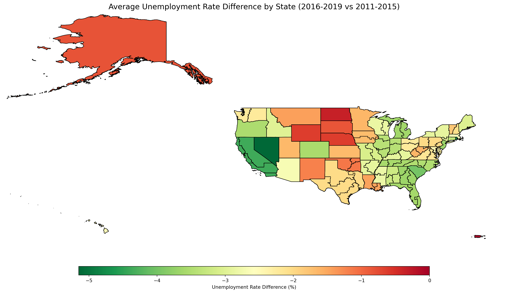
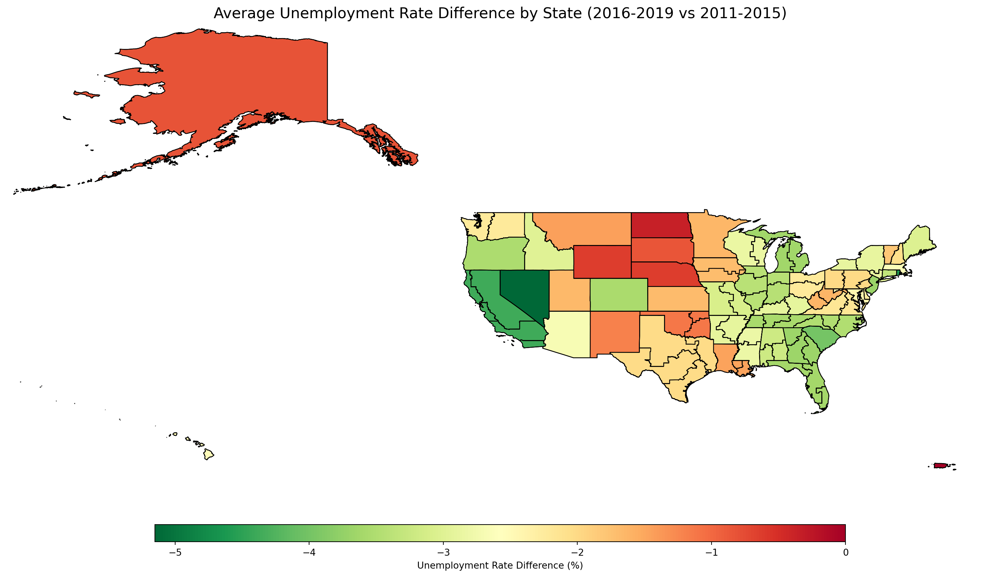
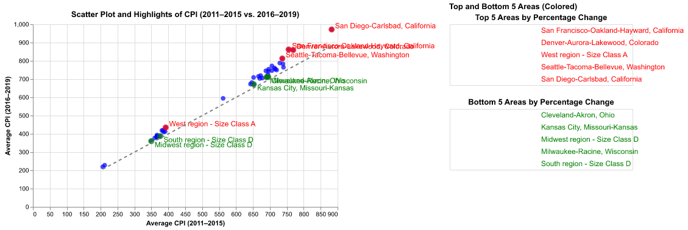

Ellipsis- Partner 1 : Dylan Xia (dizhexia), Section 2, github: DizheXia
- Partner 2 : Kevin Yao (qiyin), Section 3, github: UchicagoKevinYao
- Partner 3 : Yuqing Wen (wyuqing), Section 2, github: wwyuqingResearch question: Our project explores the economic impacts of interest rate changes made by the Federal Reserve on unemployment and spending patterns across the United States.
The central focus was on analyzing how these adjustments, during the low-interest-rate period of 2011–2015 and the relatively high-interest-rate period of 2016–2019, influenced state-level unemployment trends and urban consumer spending patterns measured by the Consumer Price Index (CPI). We chose to compare these two periods because of the Federal Reserve’s decision to increase the interest rate in late 2015.
In addition, we explored the sentiment and tone of Federal Reserve speeches and announcements to understand how these policies were conveyed to the public. The below are the key questions we try to focus on:
Approach/methods: To address these questions, we collected data from credible sources, including the Bureau of Labor Statistics for unemployment and CPI data, and official Federal Reserve communications for textual analysis. Unemployment rates were aggregated from county to state levels for more accessible regional analysis. CPI data, reflecting urban spending patterns, allowed us to examine inflation trends over time. For Fed communication analysis, we also did research on official press release documents for detailed wording comparison and analysis.
Our methodology incorporated various visualization and analysis tools. For unemployment data, we analyzed yearly averages and used geopandas to create choropleth maps that visualized regional disparities, and a difference map to highlight significant differences between the two periods. For CPI data, we used Altair to create line plots demonstrating temporal trends and scatter plots comparing changes across urban areas between the two periods. For textual analysis of Fed communications, we applied NLP techniques and used polarity scores to compare speeches versus announcements to evaluate sentiment and tone. In addition, we developed a Shiny app that integrates all our visualizations into an interactive platform, allowing users to explore our findings dynamically.
Weakness/difficulties: A key difficulty we encountered was working with unemployment data, which was only available on a county-by-county basis and differentiated by year on the official website. These particle data required more preprocessing and recalculation to make them appropriate for our analysis.
Specifically, we merged county-level data and recalculated it on a state-by-state basis, taking yearly averages and then recalculating mean values for each time interval (2011–2015 and 2016–2019). This process required more computation and involved careful handling of missing values and inconsistencies in the dataset.
Another challenge was balancing precision and generalization. Aggregating data at the state level helped simplify our visualizations and analysis but may have ignored more localized trends and variations within states. For CPI data, which was only available to download for urban areas, we faced limitations in exploring non-urban trends, as the dataset inherently excluded rural regions.
Plot descriptions for unemployment rate:
In general, it declined significantly between 2011 and 2019, with a sharp increase during the pandemic in 2020. The West and Southeast showed the greatest reductions in unemployment, particularly in states like Nevada and California.
In contrast, the Midwest and East saw relatively little reductions or even no differences. Including 2020 data revealed less obvious improvements in unemployment.

EllipsisPlot description for CPI: CPI revealed a consistent upward trend, reflecting gradual inflation. Urban areas such as California experienced significant CPI increases marked in red, while regions like Ohio and Wisconsin saw minimal changes marked in green.

Shiny app: To make our findings more interactive, we developed a Shiny app that includes most plots and maps we created. It allows users to explore the unemployment rate, CPI trends, and polarity plots through dynamic visualizations.
In more detail, the app has two dropdown menus: one for time intervals (‘2011-2015’, ‘2016-2020’), and another for visualization types (‘NLP Analysis’ and other ‘Plots’). Once ‘NLP Analysis’ is selected, two polarity plots appear at the same time.
Besides, after clicking on the ‘Plots’ option for visualization type, you can see three radio buttons (unemployment rate, CPI, and differences). And the unemployment rate is special in that you can use the slider to see each year’s corresponding map dynamically.
Policy implications: Our findings reveal some key policy implications for addressing the various impacts of interest rate changes. Regional differences in unemployment trends highlight the need for targeted interventions, such as targeted job creation programs in regions like the Midwest, which showed little improvement over time.
The CPI analysis underscores pressures of inflation in urban areas, suggesting policymakers consider tax adjustments or subsidies to support urban households while promoting rural economic development. The balance between controlling the inflation and supporting employment also shows the importance of measuring the rate changes.
Lastly, the NLP analysis suggests that appropriate and flexible communication strategies can increase public trust and reduce uncertainty, emphasizing the importance of effective messaging.
Future work: In conclusion, our project shows the diverse regional impacts of interest rate changes. While unemployment decreased overall, the degree of recovery varied significantly across states, and the inflation was more obvious in urban areas like California.
Sentiment/tone analysis demonstrated the Federal Reserve’s dual strategy of engaging the public emotionally through speeches while maintaining precision in official announcements.
Future research could expand in various directions. For example, including more indicators such as wage growth and housing prices would provide a more comprehensive understanding of economic ripple effects. While we analyze urban data, exploring rural CPI trends can address regional differences and provide a broader perspective.
Extending the timeframe to include data before 2011 or after 2019 would also capture longer-term trends and the effects of recent economic events, such as the pandemic. These directions would strengthen the foundation we’ve already explored and open up new ways to understand the impact of interest rate changes.